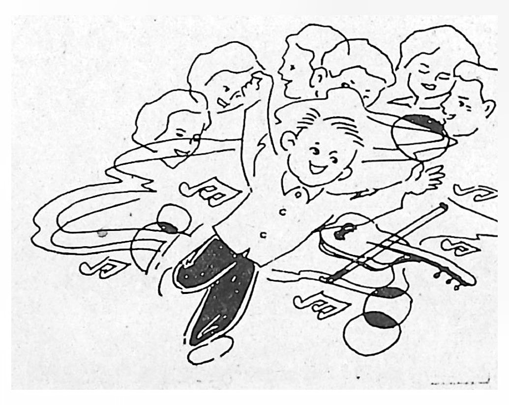

佚名 《人事》1988年第10期（总第37期），第48页
生活的小提琴（插图）
Life's Little Violin (illustration)
- Passage illustrated
“叔叔，你送错门了吧？”我情急生智，脱口而出：“爸爸已经给我买下了琴。”……翘首以待的小提琴去了，静静地去了。奇怪的是，我丝毫没有得而复失的懊悔，反觉象是卸下了一个不大不小的包袱。
“Uncle, haven't you come to the wrong door?” In my panic I blurted out: “Dad has already bought me a violin.” … The violin I had longed for went away, quietly went away. Strangely, I felt no regret at having gained and lost it; it was more as if I had put down a burden, not large but not small either.From the short story 生活的小提琴 (“Life's Little Violin”) by Zhang Zhishan, pp. 48–49. 张志善《生活的小提琴》（小说），第48–49页
- Description
- Illustration for the story: a beaming boy plays the violin amid a crowd of smiling faces and a swirl of musical notes.
- Note
- In the story a boy has long wanted a violin his low-paid father can't afford. When the father is promoted to deputy head of the county personnel bureau, a visitor brings the boy a violin — and asks him to remind his father about transferring the visitor's daughter into a government post. The boy hands the violin back.
- Artist
- Unattributed 佚名
- Published in
- 《人事》1988年第10期（总第37期）, p. 48
- Themes
- Gifts and banquets · Connections (guanxi) · Jobs and assignment · Story illustrations

Cite
Unattributed, “生活的小提琴（插图）” [Life's Little Violin (illustration)], Renshi (Personnel) 《人事》, 1988, no. 10, p. 48.